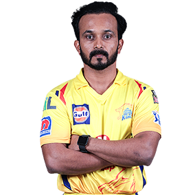

Kedar Jadhav
Role : Batsman
Batting Style : Right-handed
Bowling Style : Right-arm off-spin
Nationality : Indian
DOB : 26 March 1985
IPL Debut : 2010
An attacking middle-order batsman Kedar Jadhav, after representing Delhi Daredevils and RCB, will now represent CSK
in the eleventh edition of the cash-rich league.The Maharashtra batsman was bought by CSK for whopping INR 7.8 cr.
Jadhav, who made his way back into the Delhi Daredevils in 2013 after spending a couple of years away, was signed up
by the franchise yet again in the IPL 2014 auction. A powerful batsman, Kedar was the leading run-getter in the
Ranji Trophy 2013-14 season and played a crucial role in taking his team to the tournament final. The aggressive
middle-order batsman scored his maiden triple ton in the Ranji Trophy 2012-13 season, against Uttar Pradesh and was
the second highest run-getter for his team in the season.